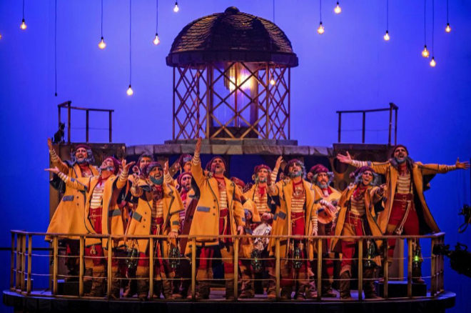
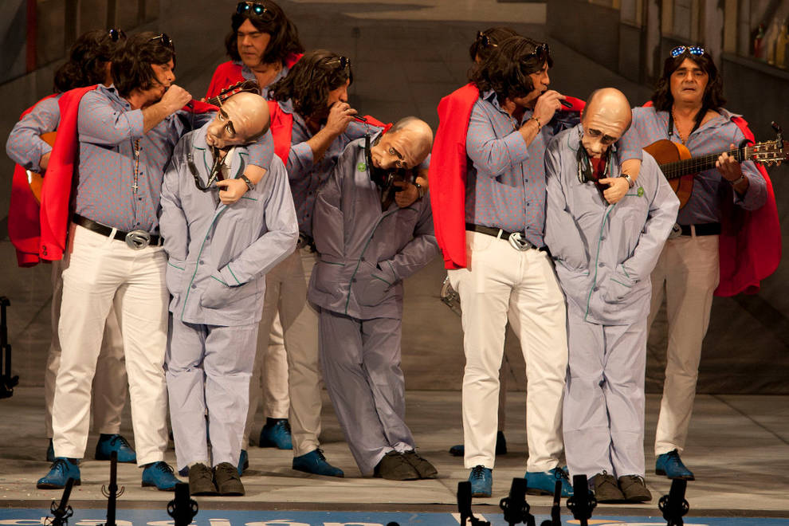
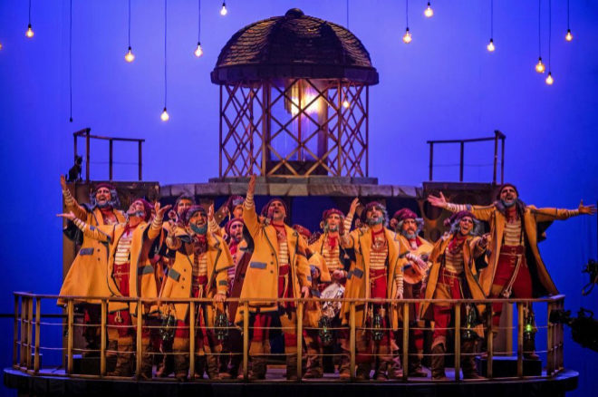
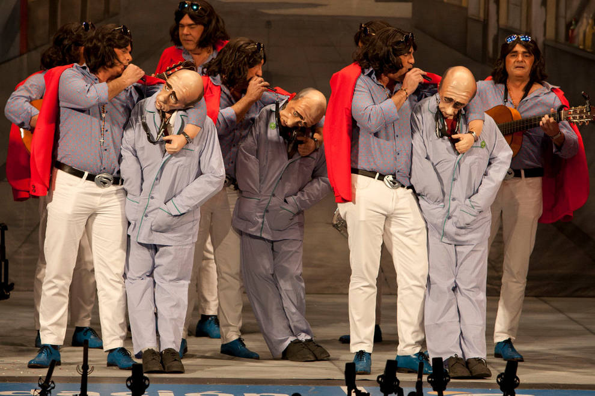

Carnaval
Cádiz, pueblo que canta y espanta sus males.
Historia
Parece ser que el Carnaval de Cádiz, es un hijo, aunque sea pródigo, del cristianismo; mejor dicho, sin la idea de la Cuaresma no existiría en la forma en que ha existido desde fechas oscuras de la Edad Media Europea. Se lo relaciona también con los ritmos del tiempo, con la percepción cualitativa del tiempo. El cristianismo establece «un orden pasional del tiempo», en el que los momentos de alegría y tristeza se alternan cronológicamente, según sea tiempo de prohibiciones o tolerancias, asimilados por el cristianismo. El Carnaval es una consecuencia de la concepción simple del tiempo que adopta el cristianismo. Una concepción ajustada a los ciclos vitales y de las cosechas.
Su principal significación es que autoriza la satisfacción de todos los apetitos que la moral cristiana, por medio de la Cuaresma, refrena acto seguido. Pero al dejarlos expansionarse durante un periodo más o menos largo, la moral cristiana reconoce también los derechos de la carne, la carnalidad. El Carnaval encuentra así, además de su significación social y psicológica, su función equilibradora en todos los aspectos. Y todo pese a que en 1523, Carlos I había prohibido totalmente las máscaras.
Pero sin duda con el transcurso del tiempo distintos aspectos se han ido marcando con mayor profundidad hasta alcanzar en Cádiz una fiesta distinta. En el proceso de su propia definición, el Carnaval gaditano toma peculiaridades del italiano, explicable por la influencia fundamentalmente genovesa que Cádiz conoció desde el siglo XV, tras el desplazamiento hacia el Mediterráneo de los turcos, los comerciantes italianos se trasladan a Occidente, encontrando en Cádiz un lugar de asentamiento perfectamente comunicado con los objetivos comerciales que los genoveses buscaban: el norte y centro de África. Los antifaces, las caretas, las serpentinas, los papelillos (confeti) son otros tantos elementos que se asimilaron del carnaval italiano.
Siglo XVI
Las primeras referencias documentadas a la celebración del carnaval que conocemos hasta ahora, se encuentran en la obra del historiador gaditano Agustín de Horozco. Datan de finales del siglo XVI, expone que en tiempos de carnaval, las gaditanas arrancaban las flores de las macetas para lanzárselas unos a otros a modo de broma. Otros documentos donde queda constancia de la celebración de los carnavales son las Constituciones Sinodales de 1591 y los Estatutos del Seminario de Cádiz en 1596, ambas contienen indicaciones para que los religiosos no participaran de las fiestas a forma que lo hacían los seglares. Estas referencias, sobre el Carnaval, confirman que ya a finales del siglo XVI las fiestas debían tener gran arraigo entre los gaditanos.
Siglo XVII
Del siglo XVII también existen referencias, un documento de 1636 reconoce la impotencia del poder civil ante la celebración popular y una carta del General Mencos fechada en Cádiz a 7 de febrero de 1652 se queja de que los trabajadores gaditanos se negaban a reparar su barco por estar en Carnestolendas. También se tiene constancia de los hechos acontecidos en 1678, año en el que se acusó al clérigo Nicolás Aznar de mantener relaciones adúlteras con una tal Antonia Gil Morena, a la que había conocido durante los carnavales.
Siglo XIX
Los carnavales continuaron en este siglo y se celebraron incluso durante el asedo francés y el reinado de Fernando VII. Otro de los intentos por prohibir los carnavales, fue el bando municipal del 20 de febrero de 1816 en el que se prohíbe de manera total la celebración de las fiestas carnavalescas, pero esta medida no tuvo ningún éxito.
La primera agrupación de la madre de fargas que se tiene constancia es Cuadrilla de gallegos, que data del año 1821. Durante aquel año el gobernador de Cádiz, Cayetano Valdés, dio el visto bueno para la celebración de un máximo de seis bailes públicos de disfraces y máscaras. Estos bailes fueron regidos por un estricto reglamento para evitar los excesos. Este carnaval tuvo que ser uno de los mejores de la época, porque no se produjeron disturbios.
De mediados de este siglo proviene la costumbre gaditana de pedir alguna invitación o monedas por parte de las agrupaciones tras cantar sus coplas. En 1861 el alcalde Juan Valverde ordena que se dote con una partida de 30 000 reales de vellón con el fin de iniciar una reforma en el carnaval. Esta tutela por parte del ayuntamiento continúa hasta nuestros días. El objetivo de esta era erradicar las malas costumbres que daban una mala imagen de la ciudad y de los gaditanos. Los bandos siguieron recordando, año tras año, a los ciudadanos las diferentes normas de comportamiento.
En 1884, el alcalde Eduardo Genovés Puig, publicó un edicto en el que volvería a repetir las restricciones ya conocidas, y añadió la obligación de las agrupaciones participantes en los carnavales a presentar previamente las coplas que cantarían durante las fiestas. Las agrupaciones conseguían así una licencia para poder salir por las calles y solo interpretarían aquellas que fueran autorizadas, es el primer antecedente de censura en el carnaval de Cádiz. Gracias a esta decisión del ayuntamiento, desde este año se conocen los nombres de las agrupaciones, el número de componentes y sobre todo se conservan las letras de las coplas.
Es en esta época cuando Cádiz influye de sobremanera en otro carnaval andaluz, el de Isla Cristina, gracias a los intereses comerciales mutuos en el negocio conservero, cuando empresarios isleños crean colonias comerciales en la costa de Cádiz y ésta da su impronta cultural al carnaval de Isla Cristina.
Los coros alcanzan su primera madurez a finales del siglo XIX y principios del siglo XX, con la participación de Antonio Rodríguez Martínez, el tío de la tiza. Sus coros más recordados son Los claveles (1896) y Los anticuarios (1905). De este último es recordado el tango de los duros antiguos que es hoy día el himno oficioso del carnaval de Cádiz.
Siglo XX
El periodo entre 1920 y 1936, abarca un periodo de madurez de las agrupaciones. En éste podemos situar a Manuel López Cañamaque, autor más prolífico del carnaval junto a Agustín González, El Chimenea.
Los carnavales de 1936 fueron los últimos que se celebraron antes del comienzo de la Guerra Civil, porque esta comenzó el 18 de julio.
Durante la guerra, el 5 de febrero de 1937 se publica el boletín oficial del estado que dos días antes había firmado el gobernador general Luis Valdés, en este se prohibía la celebración del carnaval. El 12 de enero, se publica una nueva orden manteniendo definitivamente la prohibición. En Cádiz, sin embargo, la prohibición no llegó a ser tal y los nostálgicos de la fiesta la seguían celebrando a escondidas. La situación política del momento, no era lo más idóneo dar mucha publicidad a lo que realizaban. Este paréntesis en el carnaval de Cádiz duraría hasta 1948.
Siglo XXI
En 2002, tras diversas negociaciones con colectivos de autores carnavalescos, la Fundación Gaditana del Carnaval fue sustituida por el Patronato del Concurso Oficial de Agrupaciones Carnavalescas y Fiestas del Carnaval de Cádiz. Los órganos del Patronato del Carnaval, como se acostumbra a abreviar su nombre, son el Consejo Rector, y sus dos juntas ejecutivas: una del COAC y otra de las Fiestas.
En 2007 se emite por primera vez el concurso completo para la provincia de Cádiz. Las preliminares a cargo de la televisión municipal Onda Cádiz y las semifinales y la final por parte de Canal Sur. En 2008 se introduce una nueva fase en el COAC, los cuartos de final (o primera semifinal). También se decide l.
En 2012 se emite las preliminares en directo con la misma señal tanto en Onda Cádiz TV como en el canal privado Metropolitan TV a cargo de los presentadores Agustín Bravo y Mayte Huguet.
En abril de 2018, Cádiz logra la Capitalidad Iberoamericana del Carnaval 2019-2020 en la XVIII Asamblea General de la Unión de Ciudades Capitales Iberoamericanas (UCCI) celebrada en San José de Costa Rica
Tipos de agrupaciones
Coros
Un coro de carnaval es un tipo de agrupación carnavalesca genuina de Cádiz que sale a la calle en bateas o carrozas a cantar y ofrecer coplas al pueblo.
Está compuesto desde 12 hasta 45 componentes (35 voces y 10 orquesta). Cantan en diferentes voces: tenor, segunda y bajo. La orquesta es de pulso y púa y los instrumentos que tocan son la guitarra, la bandurria y el laúd. Su repertorio se compone de presentación, tangos, cuplés, estribillos y popurrí.
El Concurso Oficial de Agrupaciones Carnavalescas (COAC), se celebra en el Gran Teatro Falla donde los coros comparten escenario con otras tres modalidades de agrupaciones: las comparsas, las chirigotas y los cuartetos.
Chirigota
La chirigota es una agrupación músico coral de carácter carnavalesco que canta principalmente por las calles ofreciendo coplas humorísticas a la ciudad. También se denomina genéricamente chirigotas a las canciones interpretadas por estas formaciones corales.
Las chirigotas son coplillas recitativas y monólogas y poseen unas formas musicales muy simples procedentes del pasodoble, la rumba, el tanguillo, la seguidilla, la jota, la isa canaria, etc. Las letrillas inventadas ad-hoc se acoplan a esta música y tratan de muy diversos temas, centrándose sobre todo en la actualidad, tanto política como de la prensa del corazón. En muchos carnavales del mundo se celebran concursos donde los grupos compiten por diversos premios, valorándose principalmente tres aspectos: el vestuario o presentación, la calidad de las voces y la agudeza de las letras.
El objetivo principal de la chirigota es hacer reír al público a través de la crítica satírico-humorística.
Comparsa
El creador de esta modalidad en el carnaval de Cádiz, tal como se conoce hoy día, fue Paco Alba. Entró como modalidad en el COAC en 1960 a mano de su creador Paco Alba. Es la modalidad más comprometida. La comparsa, en el Carnaval de Cádiz, es realmente una chirigota más fina, es decir, una estilización de ésta. Mientras la chirigota busca un aire paródico o esperpéntico, la comparsa busca una crítica poética más exigente, y un repertorio musical más elaborado, verbigracia la utilización de tres guitarras, frente a tan sólo las dos de la modalidad de chirigota.
Está compuesta desde 12 hasta 15 componentes que cantan en diferentes voces: octavilla, contralto, tenor y segunda. Se acompañan de dos o tres guitarras, un bombo, una caja y pitos o güiros. Su repertorio, al igual que el de la chirigota, se compone de presentación, pasodobles, cuplés, estribillo y popurrí.
Cuarteto
Aunque su nombre hace pensar que está compuesto por 4 componentes, los cuartetos en Cádiz además pueden ser de 3 y de 5. Se acompañan con claves o palos, pitos o güiros y ocasionalmente de una guitarra. Su repertorio se compone de parodia, cuplés y tema libre. El plato fuerte del cuarteto es sin duda la parodia, donde representan una situación donde los distintos personajes hacen reír desde la más fina ironía.
Romancero
Al igual que el coro, el romancero es una agrupación genuina del Carnaval de Cádiz. En ella, una o dos personas cuentan una historia rimada ayudándose de un tablón donde se muestran dibujos relacionados con dicha historia, con el propósito de hacer reír al público. Normalmente siguen la métrica del romance, típico de la literatura española. Aunque fuera del Concurso oficial de agrupaciones del carnaval de Cádiz, los romanceros tienen su propio concurso en la semana de carnaval.
Coplas
Presentación
La presentación, es la primera composición a interpretar y su música puede o no ser original. Actualmente la interpretan todas la modalidades, a excepción de los cuartetos, los cuales, interpretan una parodia.
Pasodoble
El pasodoble, debe ser una composición original. Lo interpretan las chirigotas y las comparsas, siendo en esta última la pieza más valorada en el COAC. Cada agrupación, en cada pase del concurso, debe cantar dos a excepción de los coros, los cuartetos y las comparsas juveniles e infantiles, que deberán cantar 3.
Tango
El tango, debe ser una composición original. Es la pieza genuina del coro y la más valorada de su repertorio. Sólo lo interpretan los coros y cada coro en cada pase del concurso, debe cantar dos. Excepto los coros infantiles y juveniles que interpretar 3.
Cuplé
El cuplé, esta pieza es común para todas las agrupaciones. Debe ser una composición original. Cada agrupación debe interpretar dos cuplés terminados por el estribillo en cada pase. Salvo en los coros, que no es obligatorio, los cuplés van engarzados, es decir unidos. Es la parte del repertorio más valorada en la chirigota. Las chirigotas infantiles y juveniles deberán de interpretar 3 cuplés.
Parodia
La parodia, es la parte más valorada en el cuarteto. No es una composición musical, es una representación que hacen los componentes del cuarteto en modo de diálogo entre ellos. Siendo el humor, la ironía y el doble sentido sus características principales.
Estribillo
El estribillo, sirve como terminación de los cuplés y puede variar de un cuplé a otro. Lo interpretan todas las agrupaciones. Los estribillos están orientados al tipo (disfraz) de la agrupación; los de chirigotas y cuartetos suelen ser estribillos humorísticos con música pegadiza y juegos de palabras sencillos (a veces, muy repetitivos para calar al público y suscitar que el auditorio repita con la agrupación las últimas frases del mismo), mientras que las comparsas cantan a algo relacionado con el tipo de forma más sentimental y suelen estar más musicalmente cuidados. Los coros no están tan encasillados a cantar estribillos humoristas o de forma "más seria", sino que depende del coro en sí y de sus autores. A pesar de esto, el estribillo siempre es libre y puede ser como los autores y/o la agrupación desee (puede ser un estribillo de chirigota y ser crítico; o de comparsa y ser humorístico), siempre y cuando la letra vaya al tipo.
Popurrit
El popurrí, es una mezcla de músicas, que pueden o no ser originales, y letras. Es una pieza obligatoria en todas las modalidades, excepto en el cuarteto, que es opcional.
Tema libre
El tema libre, es el tema opcional que tienen los cuartetos tras la tanda de cuplés obligatoria. Puede ser un popurrí, otra parodia o una tanda de cuplés.
Voces
Bajo
Voz más grave, común en los coros. No necesariamente tiene que hacer la melodía del tenor a una octava más baja.
Tercera
Voz grave que baja una quinta justa (3,5 tonos) el tono del tenor. Si el tenor es un mi la tercera será un la. (No se suele utilizar en las agrupaciones, aunque se usan mayormente en agrupaciones mixtas por el problema de la tesitura de los integrantes)
Segunda
Voz grave que baja en "dos tonos el tono del tenor". En la teoría musical, la voz de la segunda sería una tercera por de bajo del tenor que, dependiendo de la nota y la escala, sería una tercera mayor (2 tonos) o tercera menor (1'5 tonos). Por ejemplo (en escala de CM): Si la nota es un Do, su segunda voz sería un la (una tercera menor, ya que de la a do hay 1 tono y medio).
Tenor
voz media. Base de las demás voces
Octavilla
Voz aguda. Es una tercera por arriba del tenor (caso contrario a la segunda) que, por lo tanto, podrá ser mayor (2 tonos por arriba del tenor) o menor (1,5 por arriba del menor). Por ejemplo (en escala de CM): si el tenor hace un mi y el octavilla hace un sol, será una tercera menor; y si el tenor hace un do y el octavilla hace un mi, será una tercera mayor. Se suele cometer el error de creer que la octavilla es una octava por arriba del tenor.
Contralto
a voz más aguda. Es una quinta justa. Por ejemplo (en escala de CM): si el tenor hace un sol, el contralto hará un re.
Instrumentos
- La caja y el bombo, usados por las comparsas y chirigotas.
- El pito de caña o kazoo, usado por las comparsas, chirigotas y cuartetos.
- La guitarra, usada por los coros, comparsas, chirigotas y en cuartetos es opcional
- La bandurria, usada por los coros.
- El laúd, usado por los coros.
- Las claves, usado por los cuartetos.
Galeria
 


